happyhorse-1.0-r2v（參考生視頻）｜1280×720 16:9・24fps・九鏡 ×5 秒 → 拼接 49.4 秒成片（含音訊）｜2026-10-16｜任務 ID：forest-story-v2_forest_story_v2_clips/）| 驗收 | V1 的問題（18 幀診斷） | V2 作法 |
|---|---|---|
| 登場主角用一樣的模型 | 伴伴在 S7/S9 呈緋紅／粉紅（文字卡誤寫「紫紅色鱗片」且無參考圖）；蛋 S6 變純紫球；A寶衣服與照片不符 | s7–s9 送出雙參考圖：小朋友照片＋伴伴 1★ 定稿圖（壓白底）→ 伴伴鎖定紫水晶色資產模型；蛋、暴龍、服裝寫進每鏡「連戲規範」 |
| 每個分段能接在一起 | 分段間服裝／道具外觀漂移，接不起來 | 全片共用同一張參考照片＋每鏡附加 CONT 連戲條款（服裝、暴龍深棕綠鱗金眼、蛋米白紫斑、黃昏金光一致）；S5 明確演出「B寶把蛋塞進 A寶懷裡」交代道具轉手；S6→S7 以白閃無縫接 |
| 動作合理、不要穿幫 | S4 空中出現兩顆蛋（傳接動作）、S3 A寶水平飛身 | 每鏡附加 ANTI 防穿幫條款（單一顆蛋、四肢手指正常、無重影複製人）；簡化高風險動作：S3 只讓 B寶盪單一乾淨弧線、A寶站枝上；S4 取消空中傳蛋改 B寶抱緊 |
| 角色 | 設定（與參考圖一致） | 參考來源 |
|---|---|---|
| A寶（哥哥） | 九歲亞洲男孩、短黑髮、無眼鏡、白色圓領短袖T恤、卡其短褲；勇敢、表情生動 | 兩兄弟合照（本輪新照片：A寶白T）——data URI 作為 role=reference_image，九鏡共用 |
| B寶（弟弟） | 七歲亞洲男孩、短黑髮、細金屬框圓形眼鏡、橘色圓領短袖T恤、深色短褲；機靈、身手矯健 | |
| 伴伴 | 紫水晶色細鱗帶深紫斑、奶油白肚皮、金橘色分節大彎角與背脊小刺、粉紅內耳與翼膜、金黃琥珀大眼（嚴格遵照參考圖） | DFD-000_伴伴_1star.png 壓白底，s7–s9 第二參考圖 |
| 暴龍 | 深棕綠色鱗片、金黃色眼睛、滿口利牙（每鏡固定描述） | — |
| 紫斑巨蛋 | 米白色蛋殼＋圓形紫色斑點（每鏡固定描述，S6 發光時斑點仍可辨認） | — |
| 鏡 | 時間碼 | 場景 | 鏡位 | 運鏡 | 轉場（出） |
|---|---|---|---|---|---|
| S1 | 0:00–0:05 | 雨林空地（建立鏡） | 前景蕨葉遮罩・低視角 | 穿葉緩慢推軌 Dolly-in（黑場淡入） | 硬切 |
| S2 | 0:05–0:10 | 同一空地 | 中景 → 特寫 | 手持甩鏡 Whip-pan（A寶→暴龍） | 甩鏡動態接 |
| S3 | 0:10–0:15 | 蕨葉叢／暴龍爪邊 | 低角度仰拍 | 慢動作單弧線 Tracking（B寶盪藤奪蛋） | 動作匹配剪 |
| S4 | 0:15–0:20 | 巨樹林間 | 側向長鏡 | 橫移跟拍 Lateral tracking（B寶抱蛋） | 硬切 |
| S5 | 0:20–0:25 | 懸崖邊 | 雙人背身 → 正反打 | 環繞半圈 Orbit＋眼神對切（含塞蛋轉身） | 硬切 |
| S6 | 0:25–0:30 | 懸崖邊（正面） | 近景 → 特寫 | 快速推近 Punch-in＋爆閃 | 閃白轉場（0.3s・聲音留白） |
| S7 | 0:30–0:35 | 懸崖邊（柔光） | 微距 | 微距推近 Macro push-in（伴伴破殼打哈欠） | 硬切 |
| S8 | 0:35–0:40 | 森林全景 | 廣角 | 環繞＋手搖 Swirl handheld（漩渦吸暴龍） | 硬切 |
| S9 | 0:40–0:45 | 場地全景 | 低角度 → 背後 | 跟拍轉拉背 Dolly-out（回頭招手＋字幕） | 壓黑淡出＋音訊淡出 |
| 片尾卡 | 0:45–0:49 | — | — | 靜態字卡（台詞＋DragonFinder＋LOGO） | — |
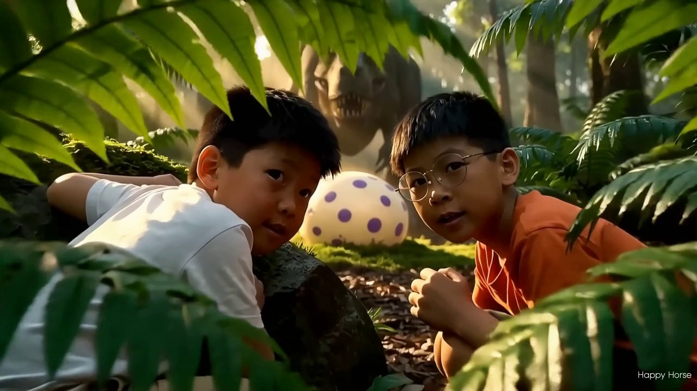
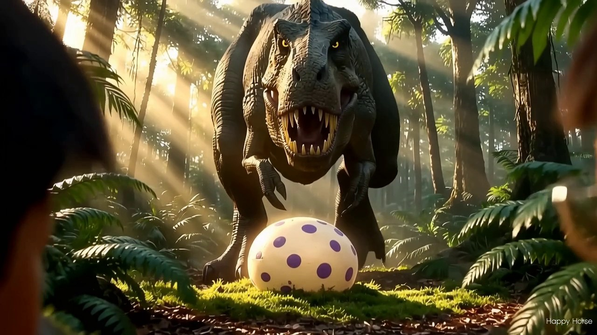
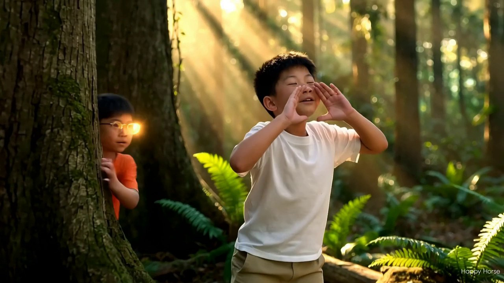
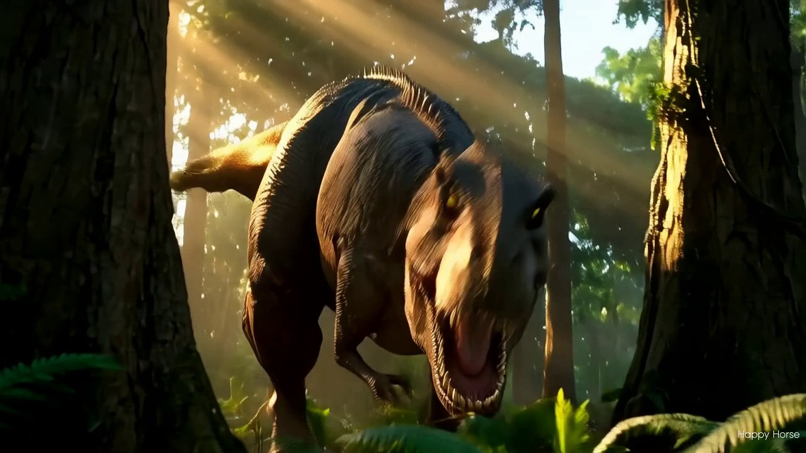
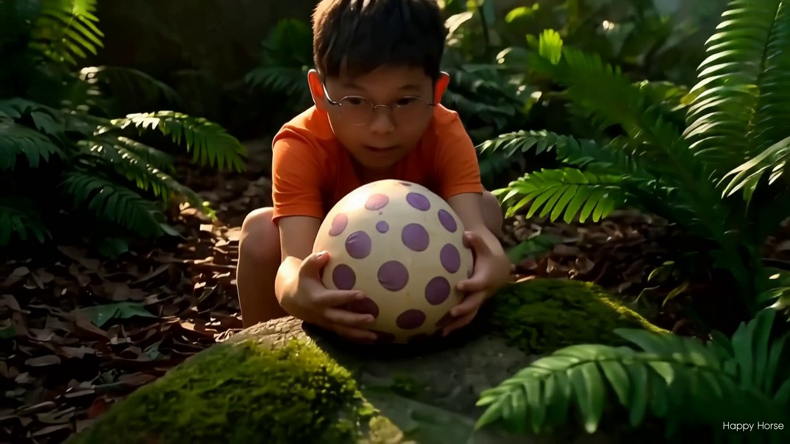
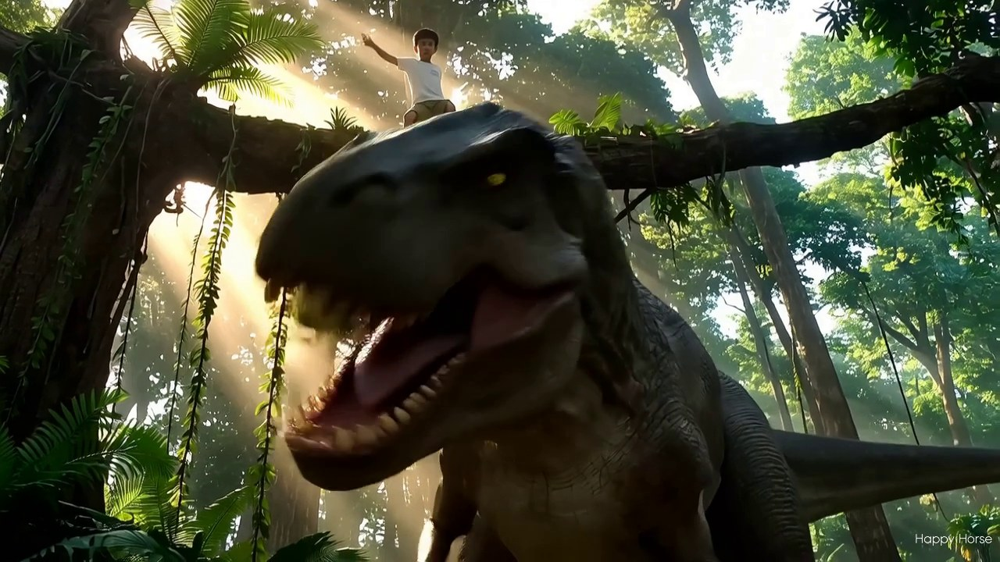
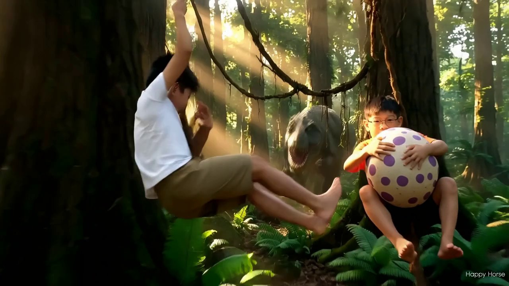
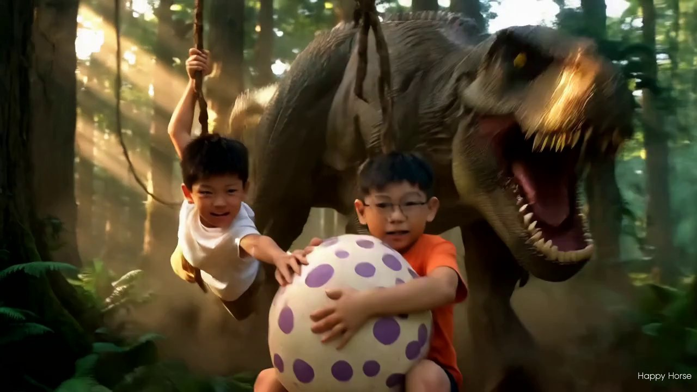
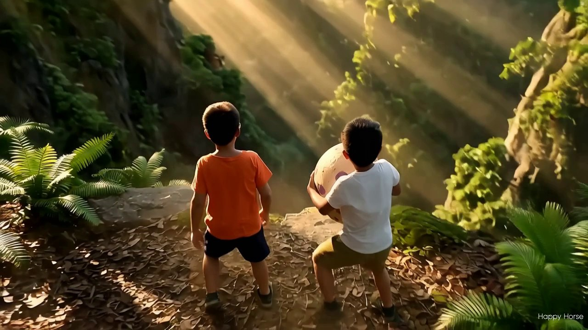
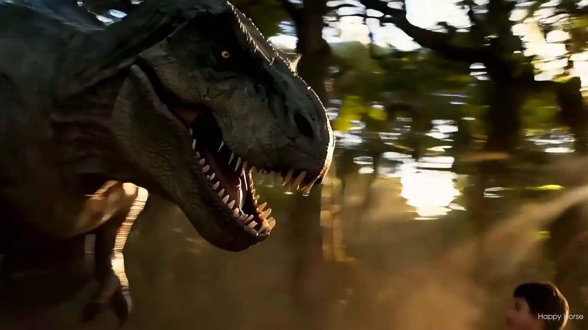
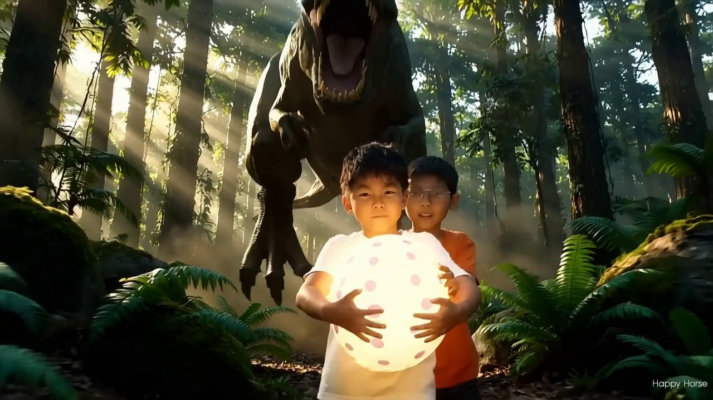
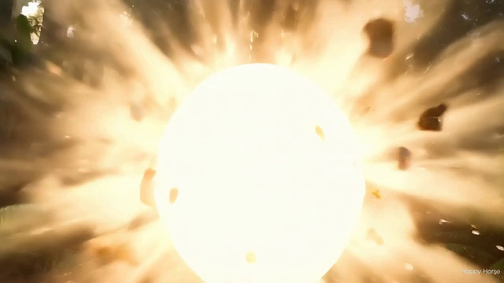
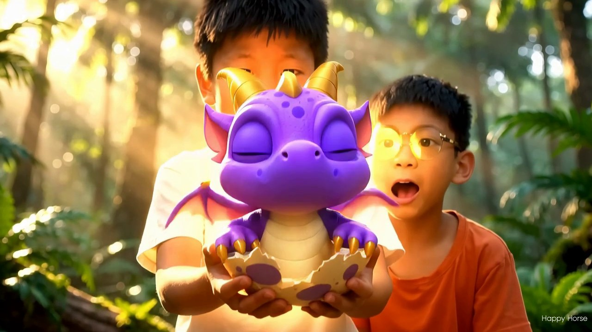
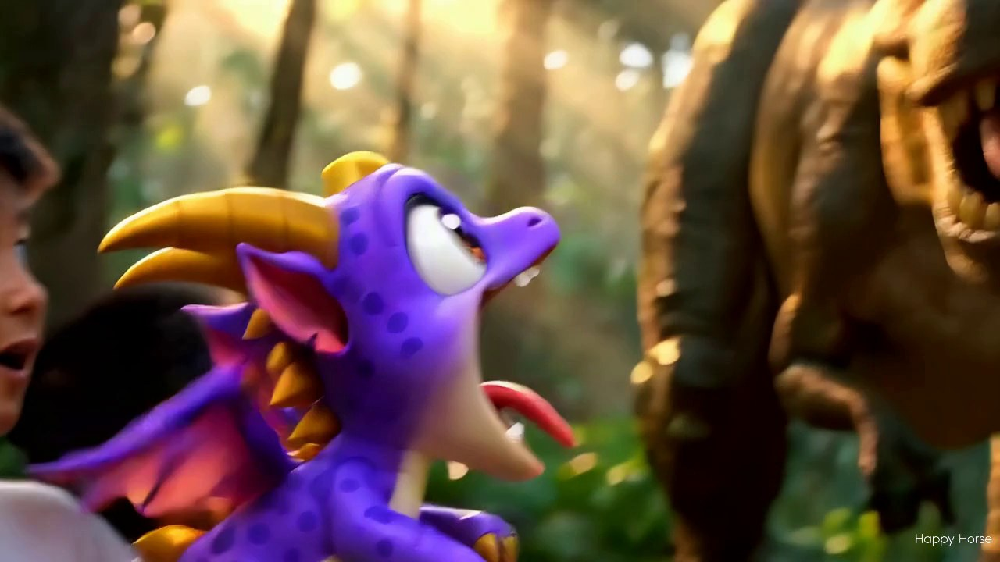
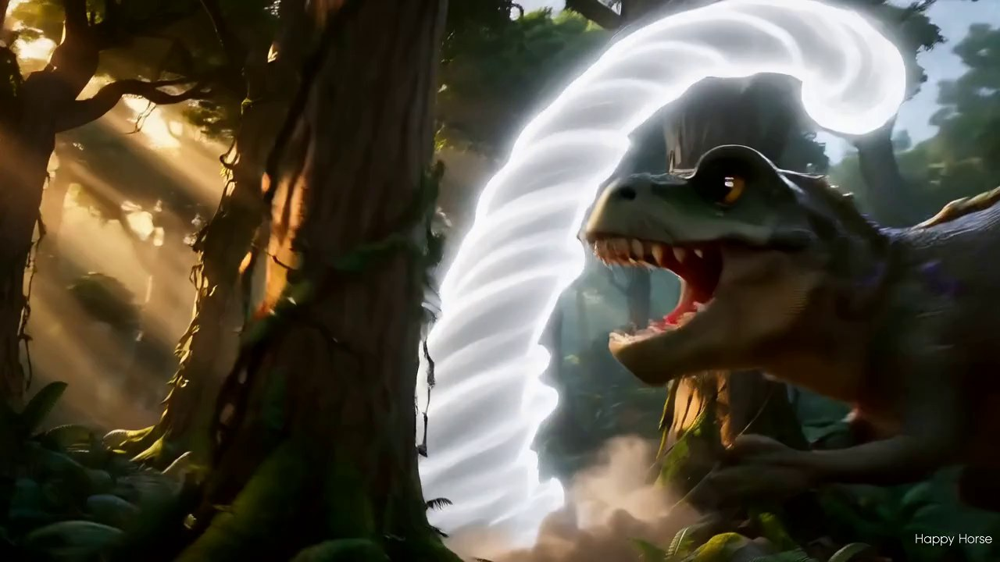
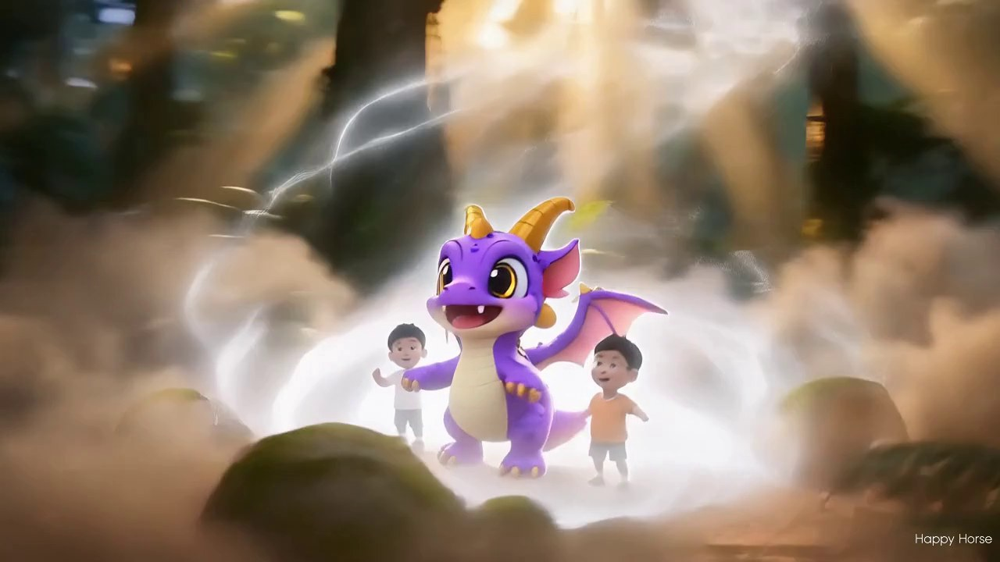
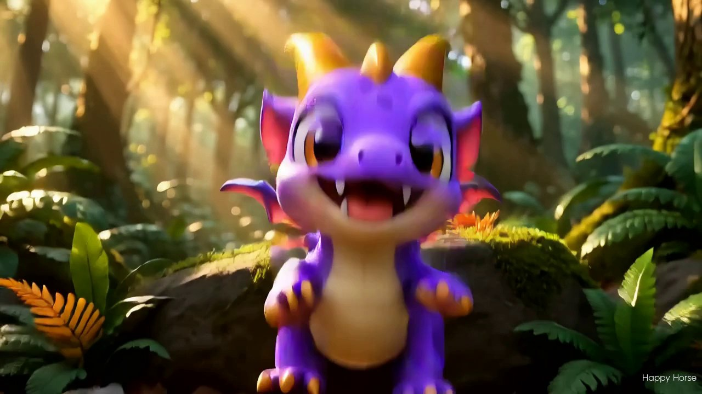
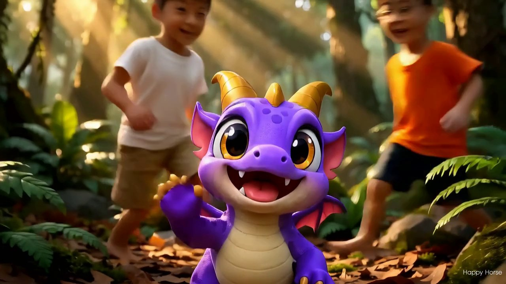
| 項目 | 值 |
|---|---|
| 模型 / 端點 | happyhorse-1.0-r2v ・ POST /videogenerator/generate，輪詢 GET {BASE}/{task_id} |
| 畫質 | 1280×720（16:9）・24fps・每鏡 5.12 秒（123 幀）——與前作相同 |
| 參考圖 | 小朋友合照 1 張（九鏡共用）＋伴伴 1★ 壓白底（s7–s9 第二參考，端點直接接受 refs=2） |
| 音訊 | 本批各鏡帶平台生成音訊（V1 無）；後製依時間序拼接（每鏡對齊 5.125s、白閃 0.3s 靜音、片尾 3.5s 淡出）mux 回成片 |
| 成本 | 720P ¥0.9/秒 × 5 秒 ≈ ¥4.5/鏡；九鏡 ¥40.5，零重跑 |
| 後製 | ffmpeg 11 段拼接＋白閃＋音訊接回；PIL 自繪中文字幕與片尾卡 |
| 鏡 | 任務 ID | 參考圖 | 狀態 | 檔案 |
|---|---|---|---|---|
| S1 | fBW9nYgFOSCpt6F09KthA | 1（照片） | ✅ succeeded | _forest_story_v2_clips/s1.mp4（5,503,901 B） |
| S2 | 2ZBP12XcusPCNkSAi1mznI | 1 | ✅ succeeded | s2.mp4（5,358,826 B） |
| S3 | 7KjbnZ4XpRo8PnBZaFqQRu | 1 | ✅ succeeded | s3.mp4（8,501,157 B） |
| S4 | 2IMEUTr9UBoATrIFo0OOqC | 1 | ✅ succeeded | s4.mp4（7,169,811 B） |
| S5 | 5v1VqPOgdWg61EkvqxAnu8 | 1 | ✅ succeeded | s5.mp4（8,102,680 B） |
| S6 | 5J9LzqJ5z7bIHtPutaRj1c | 1 | ✅ succeeded | s6.mp4（4,724,326 B） |
| S7 | 5CSGlfjF5C2jQdFwOCNU58 | 2（照片＋伴伴） | ✅ succeeded | s7.mp4（4,330,686 B） |
| S8 | 1aq42Y67Jv4EIMgt2TmP9G | 2 | ✅ succeeded | s8.mp4（4,905,677 B） |
| S9 | 4sZv4CEZ72g99HLOdXYPe | 2 | ✅ succeeded | s9.mp4（5,244,443 B） |
| 檔案 | 用途 |
|---|---|
assets/intro_forest_story_v2_720p.mp4 | 本片完整成片（報告頂部可直接播放，含音訊） |
assets/dinos_2/bban_samples/_forest_story_v2_clips/s1..s9.mp4 | 九鏡原始素材（含各鏡音訊） |
assets/dinos_2/bban_samples/_forest_story_v2_frames/ | 各鏡驗證影格（18 張） |
assets/dinos_2/bban_samples/_gen_sophnet_forest_story_v2.py | V2 九鏡生成腳本（雙參考＋連戲/防穿幫條款、可續傳） |
assets/dinos_2/bban_samples/_forest_story_v2_post.py | 後製腳本（驗證、抽幀、字幕、片尾卡、拼接） |
worklogs/worklog_forest-story-v2.md | 本任務工作紀錄（含 V1 診斷） |